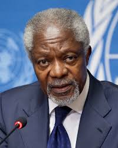

Ici vous trouverez quelques témoignages des hommes alliés aux droits de la femme
Barack Obama
Il n'y a pas de pays qui réussisse sans l'égalité des sexes. L'égalité des sexes est une condition préalable à la prospérité.
Lutte contre la violence à l'égard des femmes : Il a soutenu des initiatives visant à combattre la violence basée sur le genre et a encouragé les gouvernements à adopter des lois pour protéger les droits des femmes. Éducation des filles : Annan a plaidé pour l'éducation des filles, considérant cela comme un élément crucial pour le progrès des sociétés. Il a insisté sur le fait que l'éducation est un droit fondamental.

Koffi Annan
Mamadou Lamine Sow
Égalité des sexes : Sow souligne l'importance de l'égalité entre les sexes comme un droit fondamental et essentiel au développement de la société. Participation des femmes : Il insiste sur la nécessité d'inclure les femmes dans tous les aspects de la vie politique, économique et sociale, affirmant que leur contribution est cruciale pour un progrès durable.
Égalité des droits : Diop plaide pour l'égalité des droits entre les sexes, soulignant que les femmes doivent avoir les mêmes opportunités que les hommes dans tous les domaines, y compris le travail et la politique. Lutte contre la violence : Il dénonce la violence faite aux femmes et appelle à des actions concrètes pour protéger les victimes et punir les agresseurs.
Boubacar Boris Diop
Gilbert Houngbo
Autonomisation économique : Il souligne que l'autonomisation économique des femmes est essentielle pour le développement durable. Cela inclut l'accès à des emplois décents et à des opportunités d'entrepreneuriat. Participation politique : Il plaide pour une représentation accrue des femmes dans les processus décisionnels, affirmant que leur voix est essentielle pour une société équitable.
Décolonisation des esprits : Mbembe souligne l'importance de décoloniser les mentalités pour lutter contre les stéréotypes de genre. Il appelle à une revalorisation des contributions des femmes dans l'histoire et la culture africaines. Intersectionnalité : Il met en avant la nécessité de comprendre les droits des femmes dans un cadre intersectionnel, reconnaissant que les femmes vivent des expériences différentes selon leur race, classe sociale et origine géographique.